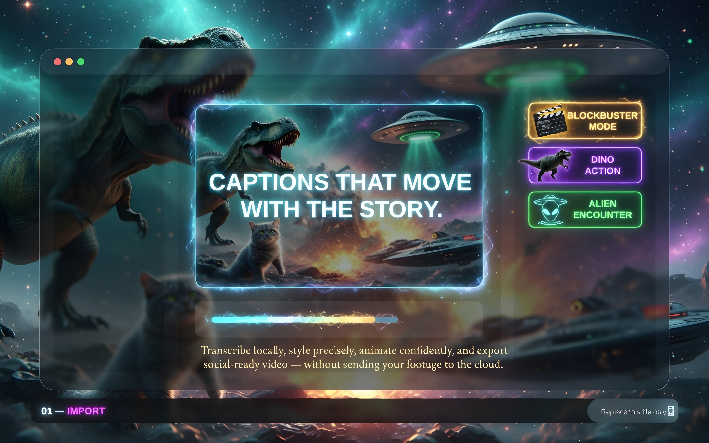
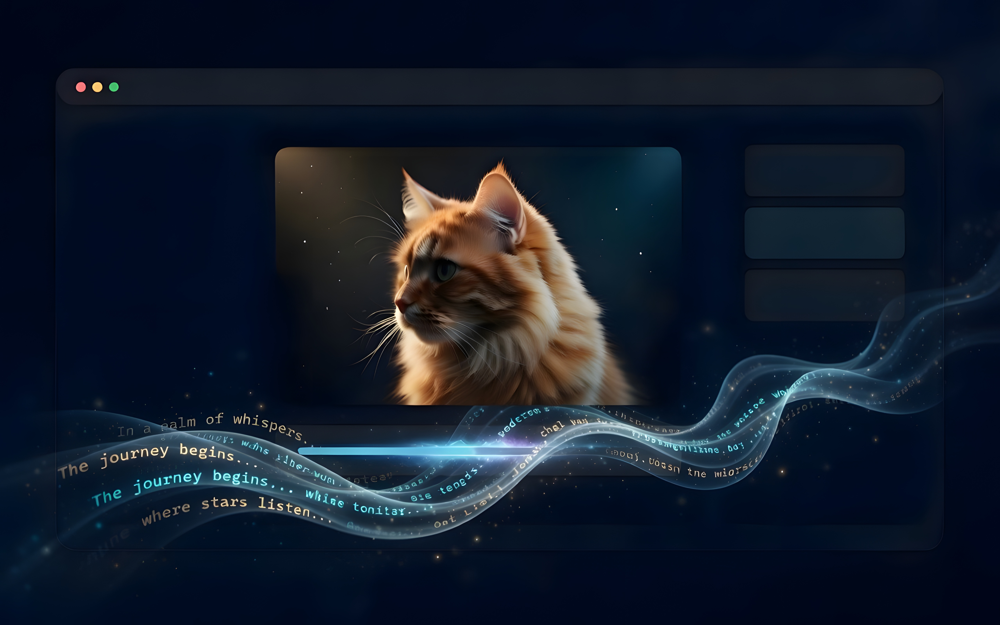
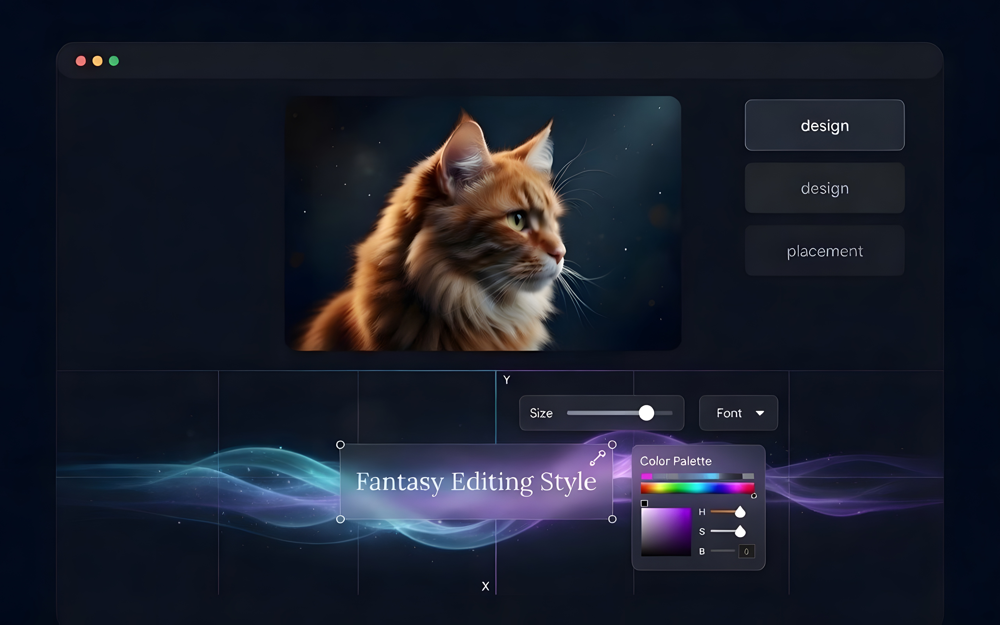
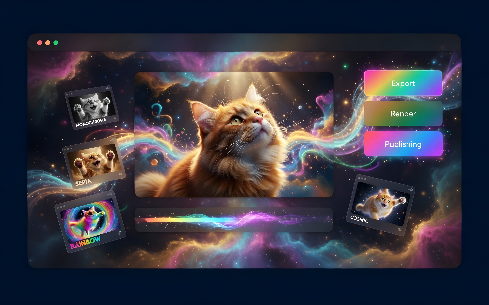

Local captioning and video editing for macOS
Caption and finish video on your Mac.
Import footage, transcribe locally, edit captions, adjust timing, and export from one focused desktop application.

Local WhisperPrivate transcription
Social-readyFast FFmpeg export
Automatic transcription
Animated ASS captions
Trim & silence tools
Custom fonts
Local video processing
AI upscaling
Core tools
Caption, edit, and export without changing apps.
Cut combines local transcription, caption design, media adjustments, and export controls in one macOS workspace.
01
Private, local transcription
Generate captions with Faster-Whisper directly on your Mac. Keep client footage, interviews, and unreleased content local.
- Bundled local Whisper model
- Editable cue timing and text
- SRT and animated ASS workflows
Animated caption styling
Build high-impact caption treatments with custom fonts, weight, outline, placement, scale, and motion.
Timeline-aware editing
Jump between cues, trim precisely, preview changes, and keep the caption list synchronized with playback.
Fast FFmpeg exports
Render captioned video with H.264, AAC, libass, and reusable export presets for short-form and full-length content.
Social video toolkit
Reframe, crop, speed-adjust, remove silence, and prepare vertical, square, or widescreen deliverables.
06
Built-in diagnostics
Check FFmpeg, transcription models, fonts, encoders, and optional tools directly from the application.
See system requirements →From import to export
A clear four-step workflow.
01
Import
Open local footage or bring in supported online media.
02
Transcribe
Create accurate captions locally with Whisper.

03
Design
Adjust typography, timing, motion, and placement.

04
Export
Render a finished file ready for publishing.

Interface
See the Cut workspace.
Workspace, typography, caption editing, and export tools in the current macOS application.
Built for everyday production
Focused tools for captioned video.
Creators
Publish sharper short-form videos with fast, readable animated captions.
Agencies
Standardize caption styling and speed up recurring client deliverables.
Educators
Improve accessibility and comprehension across recorded lessons and tutorials.
Teams
Keep sensitive footage local while creating professional captioned media.
Local processing
Keep the core workflow on your Mac.
Transcription, caption editing, font handling, and video rendering run locally. Online imports contact only the selected source service.
01
Local transcription
02
Local rendering
03
Persistent app data outside the bundle
Local-first
No mandatory cloud upload
System requirements
Built for modern Macs.
Install the signed app, run the built-in integrity check, and start working. The current release targets Apple silicon.
PlatformmacOS
ProcessorApple silicon
Storage5 GB recommended
PermissionsLocal files only
Questions
Before installing Cut.
No mandatory upload is required for local transcription, editing, and rendering. Online imports naturally contact the selected source service.
Yes. The app can recursively discover supported TTF, OTF, WOFF, and WOFF2 font packages for UI and caption workflows.
The workflow is centered around editable SRT captions and animated ASS rendering.
Application Logs includes integrity checks for FFmpeg, FFprobe, Whisper, local models, custom fonts, encoders, and optional media tools.
The current release supports Apple-silicon Macs. Intel and Windows builds are not currently available.
Cut for macOS
Download the latest signed build.
Built for Apple silicon and distributed as a signed, notarized macOS application.